Agenda
-
Introduce boot code and app code modification for RL78
- In this section , use RL78 F24 as example
- In this section , use RL78 F24 as example
-
reference document
- How to set up boot code and app project
How to Divide Boot and Flash Areas
document no. : R20UT3475EJ0300
-
How to know the MCU need use which flash library type (code flash)
RL78 FAMILY FLASH MEMORY REPROGRAMMING SOFTWARE INTRODUCTION- RL78 F23/F24 : Renesas Flash Driver RL78 Type 02 (document no. : R20UT5009EJ0110)
- RL78 G22/G23/G24 : Renesas Flash Driver RL78 Type 01
- RL78 G15/G16 : Renesas Flash Sample Program Type 01
- RL78 x1x : Flash Self Programming Library Type01
- How to set up boot code and app project

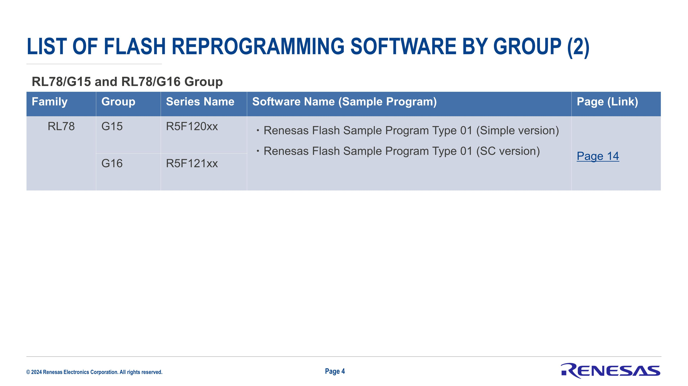


-
reference code base : boot code (RL78 F24)
RL78_F24_Boot_loader_UART
-
reference code base : app code (RL78 F24)
RL78_F24_Boot_loader_app
Flash architecture
MCU flash will split to Boot area (boot code) and Flash area (app code)
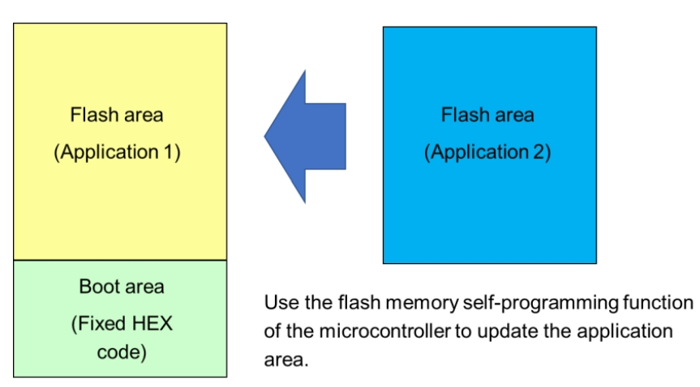
How to Divide Boot and Flash Areas
Scenario : Boot area (boot code)
- condition_check : detect flag store in ram specific area (ex : 0xFFE10) ,
- to determine if re-boot from Flash area (app code)
- if no app code in app section
- CRC check error when power on
- any other custom user defined condition
- at Flash area (app code) last 4 bytes , will store CRC data , read the CRC byte and compare to the CRC of Flash area (app code) , if comapare error , stay in Boot area (boot code)
- base on the flag or BUTTON presssed (active LOW) , to determine if going to receive data flow from interface (ex : I2C , UART , ...) or ready to jump into Flash area (app code)
- programming Flash area (app code) flow
- after Flash area (app code) update finish , read the CRC byte and compare to the CRC of Flash area (app code) , then leave update flow
- if CRC compare OK and no detect update inquiry , jump to Flash area (app code)
- NO INTERRUPT , use POLLING to receive interface data
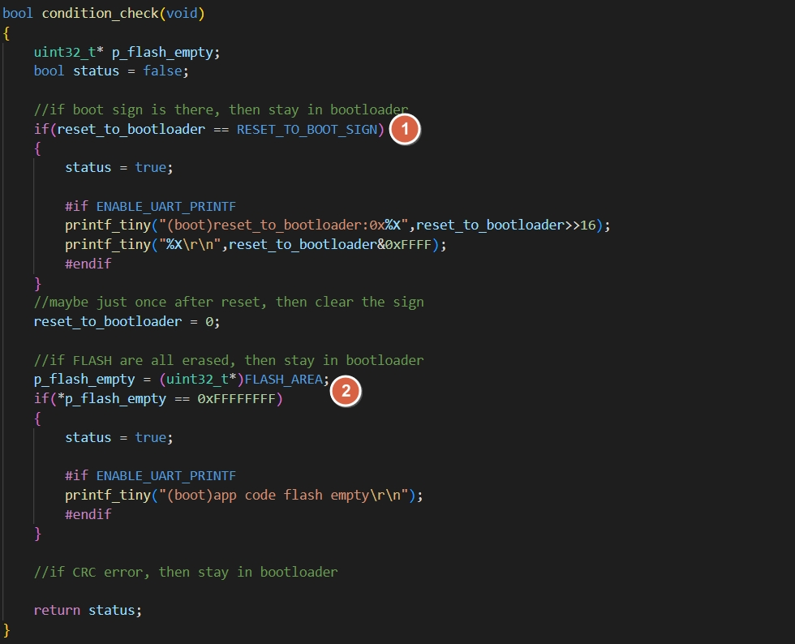
Scenario : Flash area (app code)
- set ram flag store in ram specific area (ex : 0xFFE10)
- change flag data and execute reset , when
- receive interface boot command (ex : I2C , UART , ...)
- any other custom user defined condition (ex : ADC , GPIO etc)
- change flag data and execute reset , when
- at Flash area (app code) last 4 bytes , will add CRC data after project compile finish

Project : boot code/app code modifictaion - ftable.inc
-
create and register below file in Boot area (boot code) and Flash area (app code) project
-
ftable.inc
FLASH_TABLE .EQU 0x5000
INTERRUPT_OFFSET .EQU 0x100
- the vaule will be boot code size (app code start address)
- Due to mirror memory limitations, constant data cannot exist before mirror address - 0xF0000 (ex : 0xF5000 - 0xF0000 = 0x5000)
- below is each RL78 platform minimum boot code code size definition , FLASH_TABLE MUST set bigger or equal to definition
| RL78 | const size |
|---|---|
| F24 | 0x5000 |
| F23 | 0x3000 |
| F13 | 0x2000 |
| G15 | 0x800 |
| G16 | 0x800 |
- below is default project map file after compile
RL78 F24
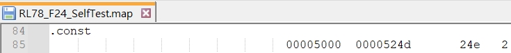
RL78 F23
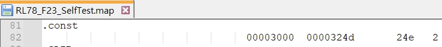
RL78 F13
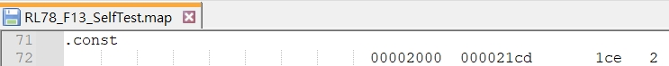
RL78 G15

RL78 G16

How to Divide Boot and Flash Areas
Project : boot code modifictaion - cstart.asm
refer to How to Divide Boot and Flash Areas :
3.1.1 Modifying the startup routine (cstart.asm)
- use smart config generate code
- copy cstart.asm to boot code project root folder
- register to Boot area (boot code) project , then start to modify
(1)
include ftable.inc

(2)
comment out conditional check

(3)
modify the section name

(4)
comment out conditional check and assembly instructions

(5)
modify main function name (boot_main)
add branch instructions : FALSH_TABLE

(6)
comment out .const section

(7)
comment out bsp_init_system

(8)
modify hardware init function name (boot_hdwinit)

How to Divide Boot and Flash Areas
Project : boot code modifictaion - stkinit.asm
refer to How to Divide Boot and Flash Areas :
3.1.2 Modifying hdwinit.asm and stkinit.asm
- use smart config generate code
- copy stkinit.asm to boot code project root folder
- register to Boot area (boot code) project , then start to modify
- modify the section name

How to Divide Boot and Flash Areas
Project : boot code modifictaion - project tree
- after modification , Boot area (boot code) project will increse 3 files as below
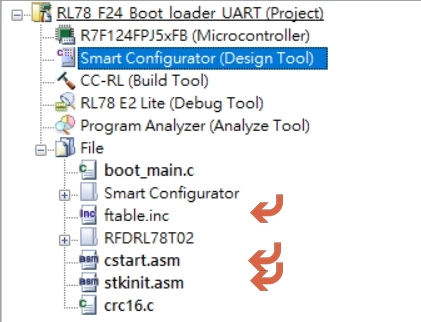
- make sure manual register cstart.asm , stkinit.asm if file missing after generate code

How to Divide Boot and Flash Areas
Project : boot code modifictaion - add CODE FLASH library
- base on RL78 MCU , register correspond CODE FLASH library into Boot area (boot code) project and exclude uncessary file (data flash , extra area)
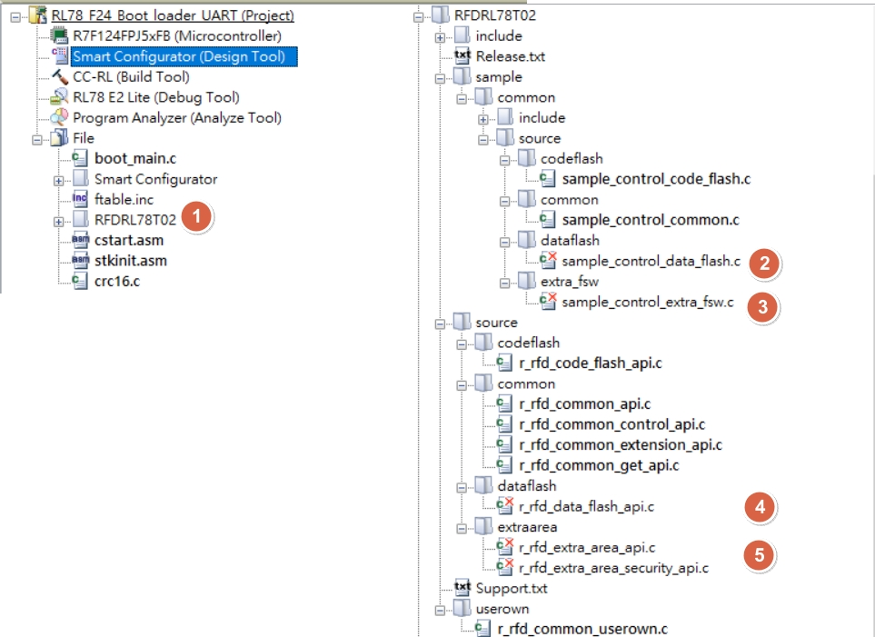
Renesas Flash Driver RL78 Type 02 User’s Manual
Project : boot code modifictaion - add CRC compare (1)
- register CRC compare into Boot area (boot code) project
- purpose:
- condition check (check and compare app code CRC , prevent jump into corrupted app code)
- after update flash , check CRC and prepare jump into app code


Project : boot code modifictaion - add CRC compare (2)
CRC in app code last 4 bytes will be added after compile at app code project by use SRecord tool
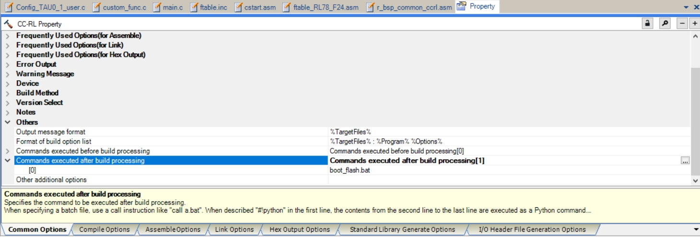
Project : boot code modifictaion - use smart config tool to generate driver
- use smart config to generate target interface drvier , to use in boot code project
- make sure manual register cstart.asm , stkinit.asm if file missing after generate code
- move those driver function into boot_main.c (to reduce boot code size and prevent duplicate function call in app code)
- exclude the driver code (c code , asm code)


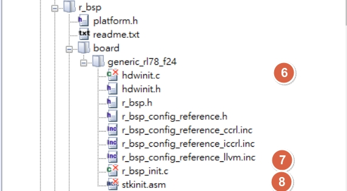

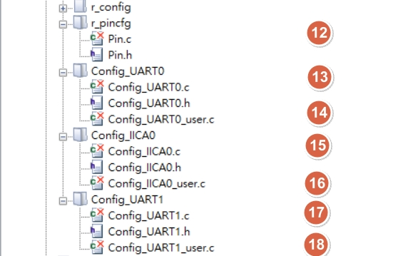
- smart configurator system setting as below

Project : boot code modifictaion - boot_main.c
- for boot_hdwinit() , will be initialized by cstart.asm
- copy below function from driver and rename in boot_main.c for boot_hdwinit
- bsp_init_system()
- copy mcu_clock_setup()
- R_Config_PORT_Create
- if use UART for debug or download
- R_SAU0_Create()
- R_Config_UART0_Start()
- R_SAU1_Create()
- R_Config_UART1_Start()
- R_Config_IICA0_Create()
- bsp_init_system()
- copy below function from driver and rename in boot_main.c for boot_hdwinit
- for boot_main() , will start with condition check and judge if need to start programming
Project : boot code modifictaion - I2C command flow
- No READ operation
- No Authentication operation


Project : boot code property modifictaion - E2 lite setting

CC-RL Compiler User's Manual
CS+ User’s Manual: CC-RL Build Tool Operation
Project : boot code property modifictaion - CC-RL Build Tool setting
Common Options
refer to How to Divide Boot and Flash Areas :
3.2.5 Specifying hex file output only to the boot area address range

- [Frequently Used Options (for Hex Output)] > [Division output file]
- base on MCU (ex : RL78F24) , to set boot code start address and end address as file name
- file size will be different if use other platform (ex : RL78 F13 , RL78 G16 , etc)
%BuildModeName%\boot0000_4FFF.hex=0000-4FFF
| RL78 | const size |
|---|---|
| F24 | 0x5000 |
| F23 | 0x3000 |
| F13 | 0x2000 |
| G15 | 0x800 |
| G16 | 0x800 |

- [Other] > [Commands executed after build processing]
- add : copy_fsy.bat
- copy boot code project fsy file to app code project root folder
copy /y/v .\DefaultBuild\RL78_F24_Boot_loader_UART.fsy ..\RL78_F24_Boot_loader_app\

How to Divide Boot and Flash Areas
CC-RL Compiler User's Manual
CS+ User’s Manual: CC-RL Build Tool Operation
Project : boot code property modifictaion - CC-RL Build Tool setting
Compile Options


How to Divide Boot and Flash Areas
CC-RL Compiler User's Manual
CS+ User’s Manual: CC-RL Build Tool Operation
Project : boot code property modifictaion - CC-RL Build Tool setting
Link Options

- [Device] > [Option byte values for OCD]
- set to
A4 - default will be 0xFF

- set to
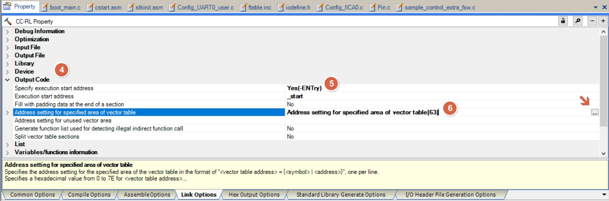
- [Output Code] > [Execute start address]
- will be called by cstart.asm
- will be called by cstart.asm
- [Output Code] > [Address setting for specified area for vector table]
-
use vect_address.xlsx under boot code project , to copy shift address

-
entry editor and paste the shift address

-
the final result :
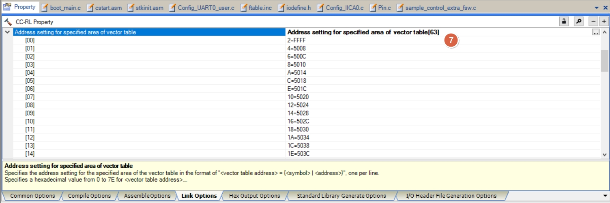
-

-
[List] > [Ooutput link map file]
- select -SHow=ALL , will display the compile result (function , address) in map file for debug
- map file under /DefaultBuild
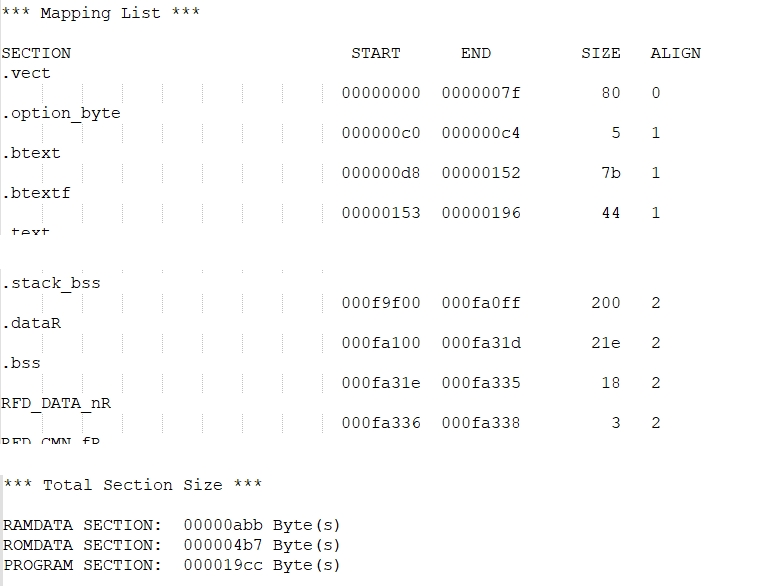
-
refer to document :
- How to Divide Boot and Flash Areas (R20UT3475EJ0300)
- 3.2.2 Specifying the section allocation
- Renesas Flash Driver RL78 Type 02 User’s Manual (R20UT5009EJ0110)
- 6.1.3.3 Section Item Settings
- 6.1.3.3 Section Item Settings
- How to Divide Boot and Flash Areas (R20UT3475EJ0300)

-
[Section] > [Section start address]
- entry editor and modify as below :
- flash area
RFD_DATA_n RFD_CMN_f RFD_CF_f SMP_CMN_f SMP_CF_f- ram area
RFD_DATA_nR RFD_CMN_fR RFD_CF_fR SMP_CMN_fR SMP_CF_fR
-
[Section] > [Section that outputs external symbols to the file]
- entry editor and modify as below :
.constf .text .textf .bss .sbss .data .sdata .RLIB .SLIB

-
[Section] > [ROM to RAM mapped section]
- entry editor and modify as below :
.data=.dataR .sdata=.sdataR RFD_DATA_n=RFD_DATA_nR RFD_CMN_f=RFD_CMN_fR RFD_CF_f=RFD_CF_fR SMP_CMN_f=SMP_CMN_fR SMP_CF_f=SMP_CF_fR

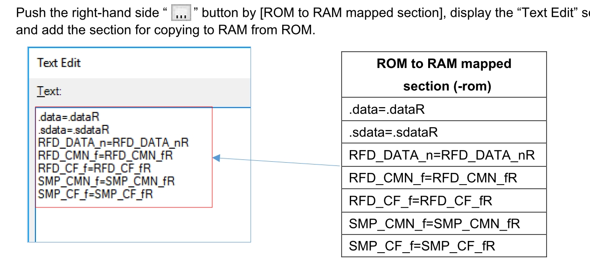
- the final result :

- how do we know section address meaning

- flash assignment after debug area
- 0x000F0 (RL78 F24 , F23)

- ram assignment
- 0xF9F00 (RL78 F24)
- 0xFCF00 (RL78 F23)


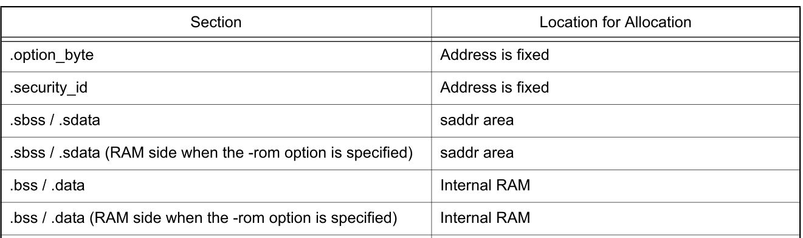
- short direction address (.saddr) assignment
- 0xFFE20 (RL78 F24 , F23)
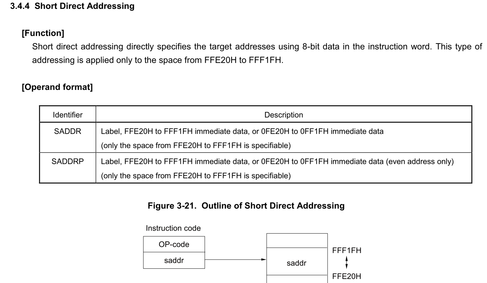
- in case of need to modify from RL78 F24 to RL78 F23 (code flash , data flash , extra area)
- code flash

- data flash

- extra area

- RAM

- code flash
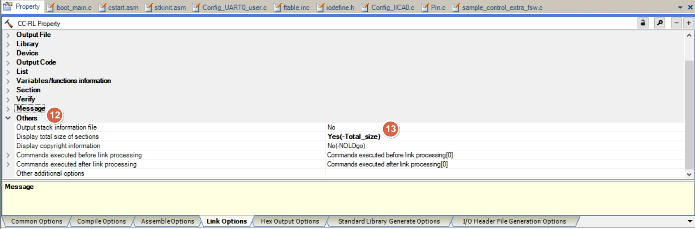
- [Others] > [Display total size sections]
- select -Total_size , will display the section size in output window
- display build code size in Output window
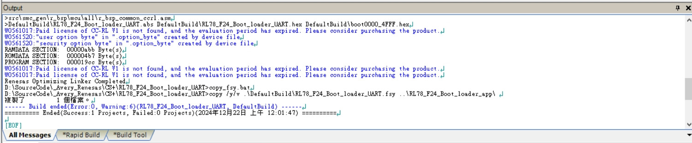
How to Divide Boot and Flash Areas
CC-RL Compiler User's Manual
CS+ User’s Manual: CC-RL Build Tool Operation
Renesas Flash Driver RL78 Type 02 User’s Manual
Project : boot code property modifictaion - CC-RL Build Tool setting
Hex Output Options
refer to How to Divide Boot and Flash Areas :
3.2.5 Specifying hex file output only to the boot area address range

- [Output File] > [Division output file]
- base on MCU (ex : RL78F24) , to set boot code start address and end address as file name
- file size will be different if use other platform (ex : RL78 F13 , RL78 G16 , etc)
%BuildModeName%\boot0000_4FFF.hex=0000-4FFF
| RL78 | const size |
|---|---|
| F24 | 0x5000 |
| F23 | 0x3000 |
| F13 | 0x2000 |
| G15 | 0x800 |
| G16 | 0x800 |

- [Hex Format]
- follow the setting of the picture
How to Divide Boot and Flash Areas
CC-RL Compiler User's Manual
CS+ User’s Manual: CC-RL Build Tool Operation
Renesas Flash Driver RL78 Type 02 User’s Manual
Reference - RL78/F23, F24 User’s Manual: Hardware - Input Source List


Project : RL78/F23, F24 User’s Manual: Hardware - Vector Table
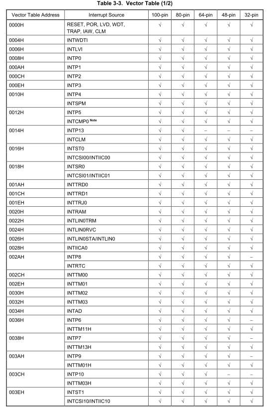
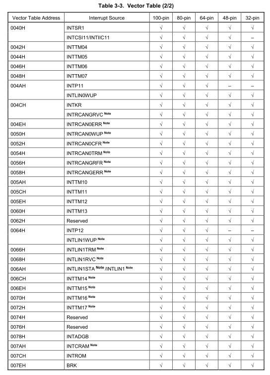
Project : boot code/app code modifictaion - ftable.inc
-
create and register below file in Boot area (boot code) and Flash area (app code) project
-
ftable.inc
FLASH_TABLE .EQU 0x5000
INTERRUPT_OFFSET .EQU 0x100
- the vaule will be boot code size (app code start address)
- Due to mirror memory limitations, constant data cannot exist before mirror address - 0xF0000 (ex : 0xF5000 - 0xF0000 = 0x5000)
- below is each RL78 platform minimum boot code code size definition , FLASH_TABLE MUST set bigger or equal to definition
| RL78 | const size |
|---|---|
| F24 | 0x5000 |
| F23 | 0x3000 |
| F13 | 0x2000 |
| G15 | 0x800 |
| G16 | 0x800 |
- below is default project map file after compile
RL78 F24
RL78 F23
RL78 F13
RL78 G15
RL78 G16
How to Divide Boot and Flash Areas
Project : app code modifictaion - cstart.asm
refer to How to Divide Boot and Flash Areas :
4.1.1 Modifying the startup routine (cstart.asm)
- use smart config generate code
- copy cstart.asm to app code project root folder
- register to Flash area (app code) project , then start to modify
- comment out conditional check

How to Divide Boot and Flash Areas
Project : app code modifictaion - ftable.asm
refer to How to Divide Boot and Flash Areas :
4.1.2 Creating a branch table program (ftable.asm)
- create ftable and register interrupt (used in app code) in proper sequence

- register ftable to Flash area (app code) project
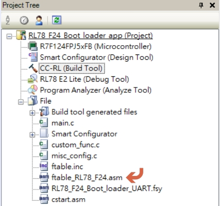
- example
- in app code , use UART0 TX/RX , UART1 TX/RX , TAU0_1 , IICA0 interrupt
- register these interrupt name with prefix !!_
.DB4 0xffffffff ; INTP13/INTCL ;0x0014
BR !!_r_Config_UART0_interrupt_send ; INTST0/INTCSI00/INTIIC00 ;0x0016
BR !!_r_Config_UART0_interrupt_receive ; INTSR0/INTCSI01/INTIIC01 ;0x0018
.DB4 0xffffffff ; INTTRD0 ;0x001A
...
.DB4 0xffffffff ; INTLIN0STA/INTLIN0 ;0x0026
BR !!_r_Config_IICA0_interrupt ; INTIICA0 ;0x0028
.DB4 0xffffffff ; INTP8/INTRTC ;0x002A
.DB4 0xffffffff ; INTTM00 ;0x002C
BR !!_r_Config_TAU0_1_interrupt ; INTTM01 ;0x002E
.DB4 0xffffffff ; INTTM02 ;0x0030
...
.DB4 0xffffffff ; INTP10/INTTM03H ;0x003C
BR !!_r_Config_UART1_interrupt_send ; INTST1/INTCSI10/INTIIC10 ;0x003E
BR !!_r_Config_UART1_interrupt_receive ; INTSR1/INTCSI11/INTIIC11 ;0x0040
.DB4 0xffffffff ; INTTM04 ;0x0042
How to Divide Boot and Flash Areas
Project : app code modifictaion - fsy file
refer to How to Divide Boot and Flash Areas :
4.2.1 Registering the externally defined symbol file with the project
- when boot code build finish , will copy fsy file into app code project
- register fsy file to Flash area (app code) project

How to Divide Boot and Flash Areas
Project : app code modifictaion - project tree
- after modification , Flash area (app code) project will increse 4 files as below

Project : app code modifictaion - use smart config tool to generate driver
- exclude the driver code (c code , asm code)

- smart configurator system setting as below
Project : app code modifictaion - remove static and vect define
refer to How to Divide Boot and Flash Areas :
Do not specify the vector address (vect) with the #pragma interrupt directive in the flash area.
- EVERY TIME when use smart config tool to re-generate driver ,
- need to remove static declaration and comment on vect definition in earch drvier Config_xxx_user.c


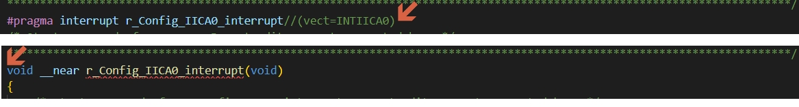
How to Divide Boot and Flash Areas
Project : app code modifictaion - main.c
- add ram flag declaration
#define RESET_TO_BOOT_SIGN 0xAA55AA55
#pragma address (reset_to_bootloader = 0x000ffe10)
volatile uint32_t reset_to_bootloader;
-
add change flag data condition check and execute reset
- example : when receive change to boot mode command , modify the flag and reset MCU
if(g_i2c_receive_complete)
{
if(0 == memcmp(&iic_buf[0], switch_device_to_boot_mode_cmd, 6))
{
R_Config_IICA0_Slave_Send((uint8_t *)response_status_ok, 7);
while(!g_i2c_transmit_complete);
reset_to_bootloader = RESET_TO_BOOT_SIGN;
_reset_by_illegal_memory_access();
}
g_i2c_receive_complete = false;
}
Project : app code property modifictaion - E2 lite setting

CC-RL Compiler User's Manual
CS+ User’s Manual: CC-RL Build Tool Operation
Project : app code property modifictaion - CC-RL Build Tool setting
Common Options
refer to How to Divide Boot and Flash Areas :
4.2.3 Specifying hex file output only to the flash area address range
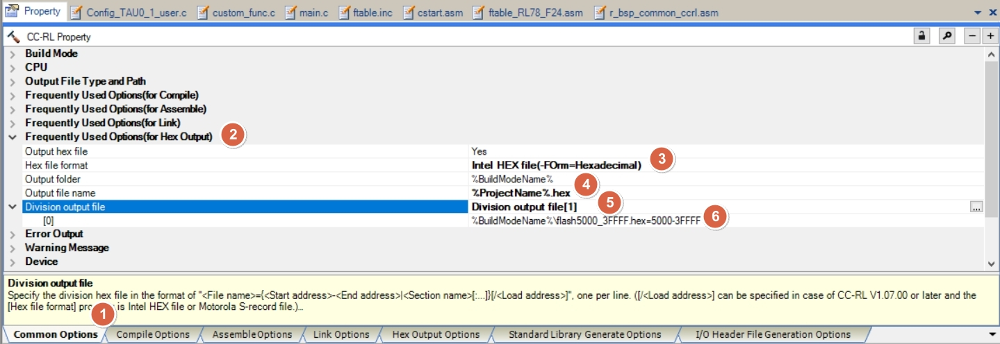
- [Frequently Used Options (for Hex Output)] > [Division output file]
- base on MCU (ex : RL78F24 , 256K flash) , to app code start address and end address as file name
- file size will be different if use other platform (ex : RL78 F13 , RL78 G16 , etc)
%BuildModeName%\flash5000_3FFFF.hex=5000-3FFFF

- [Other] > [Commands executed after build processing]
- add : boot_flash.bat , for RL78 F24 (256K)
- use srecord tool , do action as below
- save app code hex to back hex file
- 1backupHex.cmd
- base on app code hex , generate CRC
- 2generateChecksum.cmd
- base on app code hex (w/ CRC) , generate CRC into hex
- 3generateCRCHex.cmd
- covert app code hex (w/ CRC) to app code bin
- 4generateCRCBin.cmd
- base on app code hex (w/ CRC) , to over lap original hex
- 5generateCRCHexOverlap.cmd
- combine boot code and app code
- 6generateBootAppHex.cmd
- covert boot/app code hex (w/ CRC) to boot/app code bin
- 7generateBootAppBin.cmd
- save app code hex to back hex file
1backupHex.cmd
# input file
.\DefaultBuild\flash5000_3FFFF.hex -Intel
-crop 0x005000 0x40000
# produce the output file
-Output
.\DefaultBuild\flash5000_3FFFF_backup.hex -Intel
2generateChecksum.cmd
# input file
.\DefaultBuild\flash5000_3FFFF.hex -Intel
-crop 0x5000 0x3FFFC
-crc32-l-e 0x3FFFC
-crop 0x3FFFC 0x40000
-Output
-
-HEX_Dump
3generateCRCHex.cmd
# input file
.\DefaultBuild\flash5000_3FFFF.hex -Intel
-crop 0x5000 0x3FFFC
-crc32-l-e 0x3FFFC
-Output
.\DefaultBuild\flash5000_3FFFF_CRC.hex -Intel
4generateCRCBin.cmd
# input file
.\DefaultBuild\flash5000_3FFFF_CRC.hex -Intel
-crop 0x005000 0x40000 -offset -0x005000
# produce the output file
-Output
.\DefaultBuild\flash5000_3FFFF.bin -binary
5generateCRCHexOverlap.cmd
# input file
.\DefaultBuild\flash5000_3FFFF_CRC.hex -Intel
-crop 0x005000 0x40000
# produce the output file
-Output
.\DefaultBuild\flash5000_3FFFF.hex -intel
6generateBootAppHex.cmd
..\RL78_F24_Boot_loader_UART\DefaultBuild\boot0000_4FFF.hex -Intel .\DefaultBuild\flash5000_3FFFF.hex -Intel -o .\boot_app.hex -Intel -Output_Block_Size=16
7generateBootAppBin.cmd
# input file
.\boot_app.hex -Intel
-crop 0x00000 0x40000
# produce the output file
-Output
.\boot_app.bin -binary
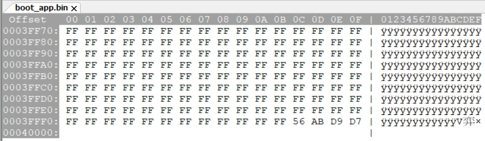
Project : app code property modifictaion - CC-RL Build Tool setting
Compile Options

How to Divide Boot and Flash Areas
CC-RL Compiler User's Manual
CS+ User’s Manual: CC-RL Build Tool Operation
Project : app code property modifictaion - CC-RL Build Tool setting
Link Options

- [Device] > [Option byte values for OCD]
- set to
A4 - default will be 0xFF
- set to
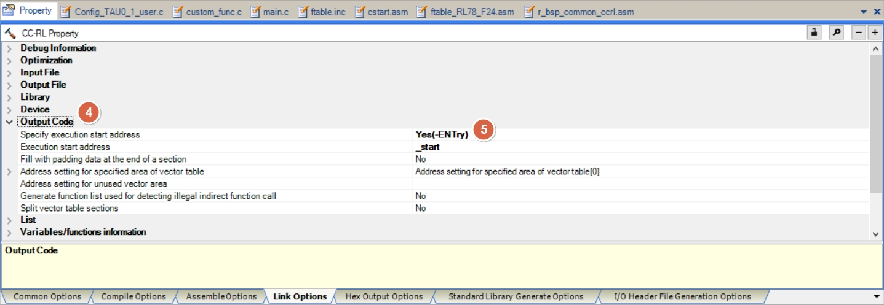
- [Output Code] > [Execute start address]
- will be called by cstart.asm
- will be called by cstart.asm

-
[List] > [Ooutput link map file]
- select -SHow=ALL , will display the compile result (function , address) in map file for debug
- map file under /DefaultBuild
-
refer to document :
- How to Divide Boot and Flash Areas (R20UT3475EJ0300)
- 3.2.2 Specifying the section allocation
- Renesas Flash Driver RL78 Type 02 User’s Manual (R20UT5009EJ0110)
- 6.1.3.3 Section Item Settings
- 6.1.3.3 Section Item Settings
- How to Divide Boot and Flash Areas (R20UT3475EJ0300)

- [Section] > [Section start address]
refer to How to Divide Boot and Flash Areas :
4.2.2 Specifying the section allocation
- app code will start from 0x5000 (RL78 F24) , and reserved branch table area (0x5200)
- reserve SRAM flag 0xFFE10 area (ram flag) , to prevent initial when power on


- [Others] > [Display total size sections]
- select -Total_size , will display the section size in output window
- display build code size in Output window
How to Divide Boot and Flash Areas
CC-RL Compiler User's Manual
CS+ User’s Manual: CC-RL Build Tool Operation
Renesas Flash Driver RL78 Type 02 User’s Manual
Project : app code property modifictaion - CC-RL Build Tool setting
Hex Output Options
refer to How to Divide Boot and Flash Areas :
4.2.3 Specifying hex file output only to the flash area address range

- [Output File] > [Division output file]
- base on MCU (ex : RL78F24) , to set app code start address and end address as file name
- file size will be different if use other platform (ex : RL78 F13 , RL78 G16 , etc)
%BuildModeName%\flash5000_3FFFF.hex=5000-3FFFF

- [Hex Format]
- follow the setting of the picture
How to Divide Boot and Flash Areas
CC-RL Compiler User's Manual
CS+ User’s Manual: CC-RL Build Tool Operation
Renesas Flash Driver RL78 Type 02 User’s Manual